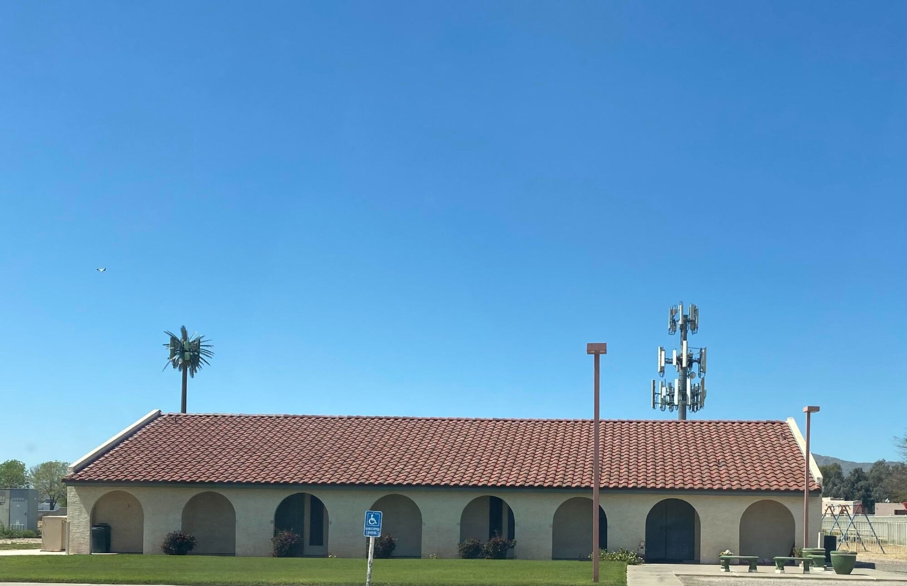
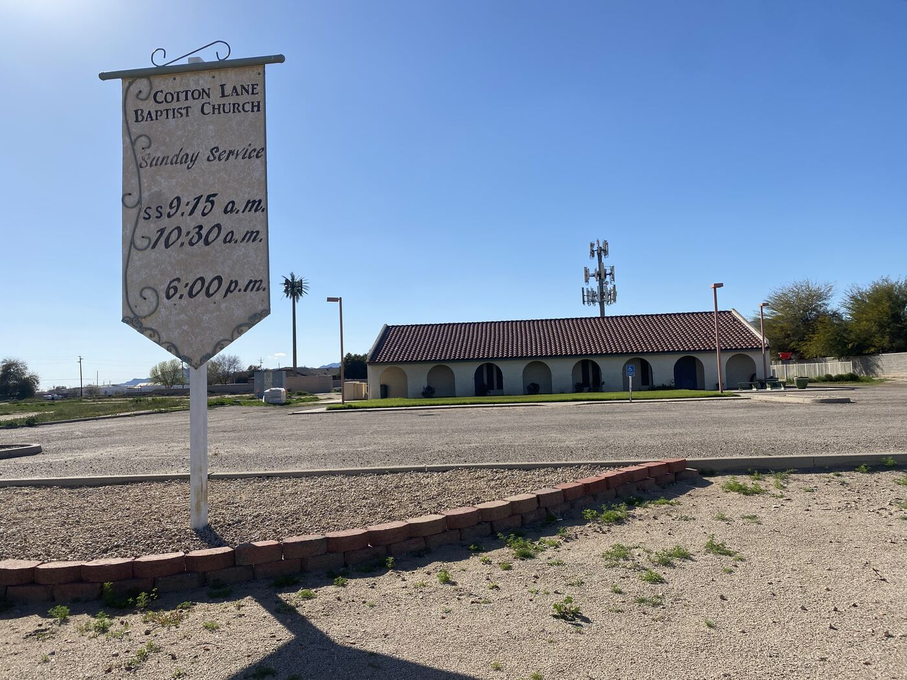

Sunday School
9:30 AM · Sundays
Start the day in the Word before worship begins.

Sunday School at 9:30 AM and worship at 10:30 AM. Come as you are. There's a place for you here.
Sunday School
9:30 AM
Every Sunday
Worship Service
10:30 AM
Every Sunday
Midweek · Wednesdays
6:00 & 6:30 PM
Men's & Women's Services

Cotton Lane Baptist is a church family that gathers to worship, open the Bible together, and look out for one another.
Maybe you've been in church your whole life. Maybe it's been years. Either way, you're welcome here. No dress code, no pressure. Come on a Sunday, say hello, and see if it feels like home.
Find a group that fits where you are in life.
9:30 AM · Sundays
Start the day in the Word before worship begins.
Mondays · 7:00 PM
A place for young adults to connect, learn, and grow together.
Wednesdays · 6:00 PM
A midweek gathering for the men of the church.
Wednesdays · 6:30 PM
A midweek gathering for the women of the church.
“Fear not, for I am with you; do not be dismayed, for I am your God. I will strengthen you and help you; I will uphold you with my righteous right hand.”
Isaiah 41:10
Questions before you come? We'd love to hear from you and help you feel at home.